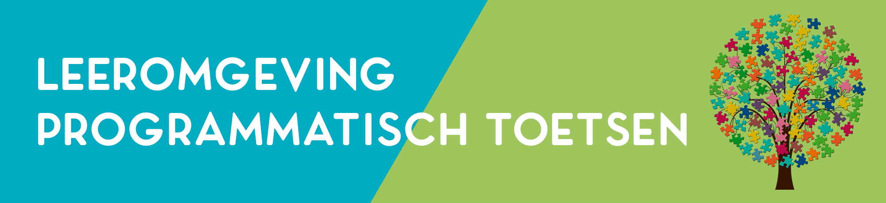

Welkom op de online leeromgeving programmatisch toetsen. Deze leeromgeving is bedoeld voor iedereen die meer wil weten over programmatisch toetsen of er praktisch mee aan de slag wil.
Ontwerpvraagstuk
Implementatie
Leerfunctie
Beslisfunctie
Zorgen en borgen
Verdieping en aan de slag
Wil je na het lezen van de inleidingen per thema nog meer weten of aan de slag? Bij ieder thema zijn praktische handvatten, concrete praktijkvoorbeelden en publicaties (vakpublicaties en wetenschappelijke publicaties) opgenomen. In het menu aan de linkerkant op de thema-pagina’s kun je steeds rechtstreeks naar deze onderdelen.
Voor elk wat wils
Er is materiaal voor docenten, managers, leden van examen- en toetscommissies en onderwijskundigen. Ben je nog relatief onbekend met het concept van programmatisch toetsen? Begin dan eens met de keynote die Cees van der Vleuten, de grondlegger van programmatisch toetsen, speciaal voor deze online leeromgeving heeft opgenomen. Je gaat dan naar het thema ‘de basis’ en klikt dan links op ‘publicaties’. Ben je bezig om programmatisch toetsen te implementeren? Wellicht vind je dan het spel ’30 seconds’ interessant. Je gaat dan naar het thema ‘de basis’ en klikt dan op ‘praktische handvatten’. Zo is er voor elk wat wils.
Een individuele toets heeft beperkingen, maar een programma niet
Het geven van feedback is geen garantie voor het gebruik ervan